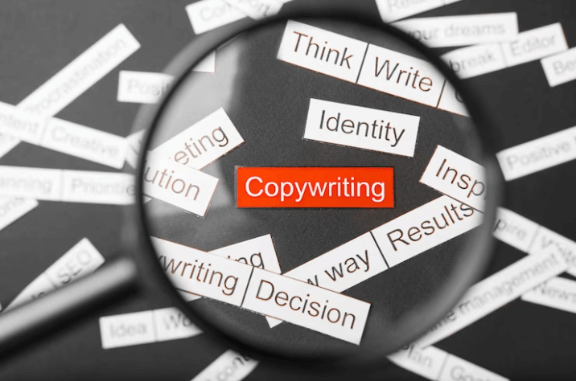

Copywriting
¿Qué es el copywriting? y ¿Cómo puede ayudar a tu presencia digital?

El copywriting es una técnica de escritura persuasiva que se utiliza para crear contenidos que atraen y convencen al público objetivo. En el mundo digital, el copywriting es esencial para lograr una buena presencia online y alcanzar los objetivos del momento. Con una estrategia adecuada de copywriting, se pueden aumentar las tasas de conversión hasta en un 73%.
Las ventajas del copywriting son muchas: permite mejorar la percepción de la marca, genera confianza en el público, aumenta el engagement y fidelización de los clientes, entre otros. Además, es una herramienta efectiva para mejorar el posicionamiento en buscadores, ya que un contenido de calidad y optimizado con palabras clave relevantes puede ayudar a mejorar el ranking en motores de búsqueda.
El contenido audio visual, hoy es una herramienta clave para tener una presencia digital sólida. Ya que su dinamismo los posiciona como uno de los favoritos indiscutidos de los usuarios de internet y redes sociales.
El contenido audiovisual es muy efectivo para captar la atención de los usuarios y mantenerla durante más tiempo. Además, ayuda a generar mayor engagement con la audiencia, aumentar la interacción y, por lo tanto, mejorar la reputación en línea.
Según estudios de marketing digital, el 87% de los marketers utilizan video en su estrategia de marketing y el 54% de los consumidores prefieren este formato. Pero no cualquier contenido audiovisual es efectivo, los estudios revelan que los usuarios deciden en un promedio de 6 segundos si siguen viendo el contenido o pasan al siguiente, por lo tanto la clave está en captar la atención en ese lapso de tiempo y en poder comunicar efectivamente en el menor tiempo posible
En REDes, ofrecemos servicios de creación de contenido audiovisual para redes sociales, sitios web y otros canales digitales. Contamos con un equipo de expertos en producción audiovisual que se enfocan en la creación de contenido de alta calidad y que resalta la imagen de tu marca.
Algunos contenidos audiovisuales creados por REDes
(acceso con miniatura)
Nuestros profesionales del contenido audiovisual
(accesos a los perfiles con miniatura de foto)
El copywriting es una técnica de escritura persuasiva que se utiliza para crear contenidos que atraen y convencen al público objetivo. En el mundo digital, el copywriting es esencial para lograr una buena presencia online y alcanzar los objetivos del momento. Con una estrategia adecuada de copywriting, se pueden aumentar las tasas de conversión hasta en un 73%.
Las ventajas del copywriting son muchas: permite mejorar la percepción de la marca, genera confianza en el público, aumenta el engagement y fidelización de los clientes, entre otros. Además, es una herramienta efectiva para mejorar el posicionamiento en buscadores, ya que un contenido de calidad y optimizado con palabras clave relevantes puede ayudar a mejorar el ranking en motores de búsqueda.
El contenido audio visual, hoy es una herramienta clave para tener una presencia digital sólida. Ya que su dinamismo los posiciona como uno de los favoritos indiscutidos de los usuarios de internet y redes sociales.
El contenido audiovisual es muy efectivo para captar la atención de los usuarios y mantenerla durante más tiempo. Además, ayuda a generar mayor engagement con la audiencia, aumentar la interacción y, por lo tanto, mejorar la reputación en línea.
Según estudios de marketing digital, el 87% de los marketers utilizan video en su estrategia de marketing y el 54% de los consumidores prefieren este formato. Pero no cualquier contenido audiovisual es efectivo, los estudios revelan que los usuarios deciden en un promedio de 6 segundos si siguen viendo el contenido o pasan al siguiente, por lo tanto la clave está en captar la atención en ese lapso de tiempo y en poder comunicar efectivamente en el menor tiempo posible
En REDes, ofrecemos servicios de creación de contenido audiovisual para redes sociales, sitios web y otros canales digitales. Contamos con un equipo de expertos en producción audiovisual que se enfocan en la creación de contenido de alta calidad y que resalta la imagen de tu marca.